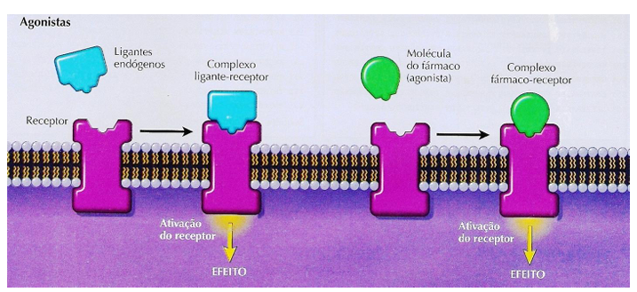

Interação Medicamentosas com Anestésicos Locais:
Os profissionais da área da saúde, em especial os médicos e cirurgiões-dentistas, durante o tratamento de seus pacientes, têm como responsabilidade manter o bem-estar e a segurança, para isso, faz-se a prescrição de medicações e anestésicos. Entretanto, esses fármacos podem interagir e causar alterações potenciais, quando usados com anestésicos locais. Sendo assim, o presente trabalho tem como função detalhar um pouco sobre o problema.
Conceito
A interação medicamentosa é definida como uma alteração no efeito ou na toxicidade de um fármaco em
virtude do uso concomitante de outros medicamentos. Essas interações podem ser benéficas, quando aumentam a
eficácia do fármaco, ou maléficas, quando diminuem sua eficiência e aumentam sua toxicidade. Isso se torna
um problema quando suas consequências causam danos ao paciente, podendo ser até irreversíveis.
Anestéscos Locais:
Os anestésicos locais são medicamentos essenciais para a realização de procedimentos
odontológicos.
A principal função é impedir a despolarização das membranas plásmáticas no canal de
sódio, bloqueando temporariamente a
transmissão do impulso nervoso e, assim, inibir o sinal de dor do paciente. Isso ocorre sem promover
mudanças de consciência no paciente. O anestésico é formado por três porções: uma porção aromática com
base lipofílica, que permite sua penetração nas membranas plasmáticas das células; uma cadeia
intermediária, que pode ser do tipo amida ou éster; e um grupamento amina hidrofílico,
responsável por determinar a solubilidade e a velocidade de ação do fármaco.
Receptores e ligantes da Membrana Celular
Na membrana celular e no hialoplasma, existem estruturas denominadas de
receptores, que são grandes moléculas responsáveis pela
sinalização química celular. Quando ativados, esses receptores regulam,
direta ou indiretamente, diversos processos bioquímicos da célula.
Quando os receptores se ligam a compostos presentes nos fármacos, formam-se
complexos denominados ligantes, que apresentam alta seletividade em virtude da afinidade
entre as moléculas. Essas interações estabelecem ligações químicas que podem ser
reversíveis ou irreversíveis.Esse ligante pode ativar ou inativar um receptor, podendo, assim,
aumentar ou diminuir uma funcionalidade celular específica. Aliás, um mesmo ligante
pode interagir com mais de um receptor.

Figura: Representação esquemática acerca da ligação do fármaco-receptor. Retirada de: Repositório (www.iq.ufrgs.br)
A capacidade de um medicamento interagir com a célula acontece justamente devido à afinidade existente entre suas moléculas e os receptores celulares. Essa afinidade determina a probabilidade de ocorrer a união entre ambos e, consequentemente, influencia a eficácia do medicamento, uma vez que a eficácia depende do grau de ativação do receptor pelo ligante e da resposta celular.
A durabilidade farmacológica de um medicamento está intrinsecamente ligada ao tempo de resistência, que é o período em que a união fármaco-receptor persiste. Essa durabilidade pode ser alterada por processos farmacodinâmicos que irão interferir na velocidade da reação, atuando na associação ou desunião do fármaco. Esse tempo de persistência pode trazer prejuízos, caso ele ocorra por períodos prolongados, como a alteração do potencial de ação (ou eficácia) do fármaco, levando a uma diminuição do efeito terapêutico desejado ou ao acúmulo, que pode gerar o surgimento de efeitos tóxicos ao paciente.
Essa ligação ocorre em locais específicos chamados sítios de reconhecimento (ou sítios receptores). A
atividade e o funcionamento desses receptores são influenciados por inúmeros fatores, tanto externos
quanto por mecanismos intracelulares.
O efeito da ligação pode variar de acordo com o tecido alvo e o tipo de molécula ligante, que pode ser o
próprio fármaco (agonista exógeno) ou um agonista endógeno (como um hormônio ou neurotransmissor).
Os principais fatores que afetam essa interação e, consequentemente, a resposta clínica do paciente,
incluem os tipos de fármacos utilizados, o envelhecimento, as mutações genéticas e doenças (que alteram o
metabolismo ou a expressão receptora), o número e a afinidade de ligação dos receptores.
Quando outras moléculas (sejam elas drogas ou substâncias endógenas) se ligam a esses sítios de reconhecimento, ou a outros locais inespecíficos que alteram a conformação do sítio principal, a ligação e, consequentemente, o funcionamento do fármaco podem ser impedidos. O fármaco só será plenamente ativo se estiver livre e com disponibilidade para se ligar ao seu sítio receptor alvo.
Principais Anestésicos Locais
Lidocaína
Ficha do Anestésico
- Nome: Lidocaína 2%
- Mecanismo de ação: bloqueia os canais de sódio, impedindo a condução dos impulsos nervosos e promovendo anestesia local.
- Duração: aproximadamente 40 a 60 minutos de anestesia pulpar (com vasoconstritor).
- Indicações:
- Pacientes pediátricos
- Gestantes
- Diabéticos
- Cardiopatas hipertensos (estágio I ou controlados)
- Asmáticos
- Contraindicações:
- Alergia à lidocaína ou a componentes da formulação
- Bloqueio cardíaco de 2° ou 3° grau (sem marcapasso)
- Doença hepática grave
Articaína
Ficha do Anestésico
- Concentração: 4%
- Potência elevada e rápida difusão tecidual
- Duração média: 60 a 75 minutos
- Indicação: Procedimentos odontológicos de média a longa duração
- Vantagens: Excelente penetração óssea e rápida ação
- Contraindicações:
- Crianças pequenas
- Gestantes
- Observações: Evitar uso em áreas com infecção, pois o pH alterado pode reduzir a eficácia
Mepivacaína
Ficha do Anestésico
- Concentração: 2% a 3%
- Ação intermediária e baixa vasodilatação
- Duração média: 30 a 45 minutos
- Indicação:
- Pacientes que não toleram vasoconstritores
- Procedimentos curtos e moderados
- Contraindicações:
- Hipersensibilidade conhecida
- Doenças hepáticas graves
- Vantagem: Pode ser usada sem vasoconstritor, mantendo boa eficiência anestésica
Prilocaína
Ficha do Anestésico
- Concentração: 3% a 4%
- Baixa toxicidade sistêmica
- Duração média: 40 a 60 minutos
- Indicação:
- Pacientes sensíveis à adrenalina
- Procedimentos de curta a média duração
- Contraindicações:
- Anemia
- Metemoglobinemia
- Observações: Usar com cautela em gestantes e pacientes debilitados
Bupivacaína
Ficha do Anestésico
- Concentração: 0,5%
- Ação prolongada: até 3 a 8 horas
- Alta lipossolubilidade, o que prolonga sua duração
- Indicação: Cirurgias extensas e procedimentos de longa duração
- Contraindicações:
- Gestantes
- Pacientes com doenças cardíacas graves
- Observações: Pode causar arritmias se usada em doses elevadas
Uso Racional de Medicamentos na Prática Odontológica: Papel do Cirurgião-Dentista na Prescrição Segura e Eficaz
Na prática odontológica, o uso de medicamentos é um recurso fundamental para prevenir, controlar ou tratar
condições relacionadas à saúde bucal e sistêmica do paciente. Esses fármacos podem ser utilizados durante
os procedimentos clínicos, como no manejo de dor, ansiedade e infecções; e, ainda, no pós-operatório,
visando otimizar a recuperação e minimizar complicações.
Entre as classes mais empregadas estão os analgésicos e anti-inflamatórios, voltados para o controle da
dor e da inflamação; e os antimicrobianos, indicados em situações específicas para prevenir ou tratar
infecções. Além disso, ansiolíticos, corticoides e enxaguatórios antissépticos também fazem parte do
arsenal terapêutico odontológico.
O uso racional desses medicamentos requer conhecimento aprofundado de farmacologia, indicações, posologia,
interações medicamentosas e possíveis efeitos adversos, respeitando sempre as particularidades clínicas de
cada paciente. Uma prescrição segura e efetiva contribui para o sucesso do tratamento odontológico e para
a preservação da saúde geral, reforçando a importância da atualização constante do profissional em relação
aos avanços terapêuticos e normativos.
A prescrição medicamentosa em odontologia é uma prática fundamental para o manejo clínico do paciente,
estando diretamente relacionada à prevenção, ao controle e ao tratamento de diversas condições que
envolvem a cavidade bucal e estruturas adjacentes.
Interações Farmacodinâmicas e Farmacocinéticas
As interações farmacodinâmicas são modificações que alteram a sensibilidade ou a resposta tecidual quando em contato com outro fármaco. Elas podem ter efeito agonista (aumentando a resposta) ou antagonista (reduzindo a resposta) e ocorrer tanto no nível do receptor membranar quanto do receptor intracelular.
Já as interações farmacocinéticas ocorrem quando um medicamento consegue alterar a absorção, distribuição, ligação às proteínas, biotransformação (metabolismo) ou excreção de outra medicação. Desse modo, a interação modifica tanto a quantidade quanto a persistência da disponibilidade do fármaco no local de ação.
Entretanto, esse tipo de interação não altera o mecanismo de ação do fármaco, mas sim a sua duração e a magnitude do efeito.
A ocorrência de interações medicamentosas pode, com frequência, ser prevista com base no conhecimento das propriedades farmacológicas dos medicamentos individuais. Além disso, as interações podem ser detectadas e gerenciadas por meio do monitoramento das concentrações dos fármacos no plasma ou pela observação dos sinais clínicos do paciente.
Farmacocinética = alterações na absorção, distribuição, metabolismo e excreção.
Agonistas, Antagonistas e Sinergismo
Agonistas
Agonistas ativam receptores que produzem a resposta desejada.
Agonistas convencionais
Aumentam a proporção de receptores ativados, gerando a resposta típica do sistema.
Agonistas inversos
Estabilizam o receptor em sua conformação inativa e agem de forma semelhante aos antagonistas competitivos, reduzindo a atividade basal do receptor.
Exemplos de agonistas
Muitos hormônios, neurotransmissores e fármacos atuam como agonistas, como:
- Neurotransmissores: acetilcolina, histamina, noradrenalina.
- Fármacos: morfina, fenilefrina, isoproterenol, benzodiazepinas, barbitúricos.
Antagonistas
Antagonistas impedem a ativação do receptor, bloqueando a ação de agonistas endógenos ou exógenos.
Efeito sobre a função celular
- Aumentam a função celular quando bloqueiam uma substância que normalmente diminui a função.
- Diminuem a função celular quando bloqueiam uma substância que normalmente aumenta a função.
Classificação quanto à ligação ao receptor
Antagonistas reversíveis: dissociam-se prontamente do receptor.
Antagonistas irreversíveis: formam ligação química estável, permanente ou quase permanente (por exemplo, por alquilação).
Antagonistas pseudoirreversíveis: dissociam-se lentamente, gerando efeito prolongado.
Antagonismo competitivo
No antagonismo competitivo, o antagonista compete com o agonista pelo mesmo sítio de ligação no receptor, impedindo sua ligação.
Antagonismo não competitivo
No antagonismo não competitivo, agonista e antagonista podem ligar-se simultaneamente ao receptor, mas a ligação do antagonista reduz ou impede a ação do agonista, geralmente por alteração alostérica ou bloqueio de etapa subsequente.
Antagonismo competitivo reversível
No antagonismo competitivo reversível, tanto agonista quanto antagonista formam ligações de curta duração com o receptor. Estabelece-se um equilíbrio dinâmico entre agonista, antagonista e receptor.
Esse tipo de antagonismo pode ser superado pelo aumento da concentração do agonista.
Exemplo clássico: naloxona × morfina
A naloxona é um antagonista do receptor opioide, estruturalmente semelhante à morfina. Quando administrada pouco antes ou logo após a morfina, bloqueia seus efeitos.
Porém, esse antagonismo competitivo pode ser revertido com a administração de doses mais altas de morfina, que deslocam a naloxona do receptor.
Agonistas parciais e agonistas/antagonistas
Análogos estruturais de agonistas podem apresentar eficácia baixa e, por isso, ser classificados como agonistas parciais.
Eles podem exercer efeito agonista em determinadas condições e, ao mesmo tempo, atuar como antagonistas de agonistas completos, competindo pelo mesmo receptor.
Pentazocina
A pentazocina ativa receptores opioides, desencadeando efeitos típicos de opioides, mas também pode bloquear a ativação desses receptores por outros opioides.
Assim, comporta-se como agonista parcial e também como agonista/antagonista, atenuando os efeitos de outro opioide administrado enquanto ainda estiver ligada ao receptor.
Um fármaco que age como agonista parcial em um tecido pode atuar como agonista completo em outro, dependendo da reserva de receptores e do sistema envolvido.
Sinergismo farmacológico
Sinergismo ocorre quando a associação de dois fármacos produz um efeito maior do que o efeito de cada um isoladamente.
Sinergismo aditivo
No sinergismo aditivo, os efeitos dos fármacos se somam de forma previsível (efeito total ≈ efeito A + efeito B).
Exemplo: uso conjunto de dois anti-hipertensivos com mecanismos distintos, resultando em maior redução da pressão arterial.
Sinergismo potencializador
No sinergismo potencializador, um fármaco tem pouco ou nenhum efeito isoladamente, mas aumenta de forma importante o efeito de outro fármaco quando usados em associação.
Exemplos:
- Cafeína potencializando o efeito analgésico de alguns fármacos.
- Associação de benzodiazepínicos com outros depressores do SNC, intensificando a depressão do sistema nervoso central.
Como monitorar o paciente?
-

Monitorização clínica e laboratorial
O tratamento do paciente nessas condições inclui avaliações periódicas baseadas em exames laboratoriais. Nesses exames serão aferidas as concentrações dos fármacos, bem como o estado renal e hepático do paciente. Tendo em vista os dados obtidos, serão feitas análises que irão subsidiar o tratamento, permitindo ajustar as doses e prevenir futuros problemas.
-

Observação dos sinais e sintomas
Além disso, a anamnese é essencial para levantar as queixas do paciente, uma vez que náuseas, tonturas, sangramentos e outros sintomas, por mais habituais que sejam, podem ser sinais de alterações significativas na saúde do paciente. Visto isso, é essencial que o médico ou cirurgião-dentista monitore o paciente para que, caso ocorra qualquer alteração, seja feita a substituição do fármaco.
-

Registro e uso de protocolos
O responsável pelo quadro clínico deve se atentar e registrar qualquer mudança na condição do paciente após a introdução ou suspensão de determinado medicamento. Ademais, é de grande importância a leitura das bulas, indicações e protocolos das medicações que serão prescritas.
Antidepressivos
Os próprios anestésicos locais podem apresentar alguns efeitos adversos sobre o sistema nervoso central, principalmente no que se refere ao caráter excitatório. Isso pode causar tremores e inquietação, seguidos de depressão do SNC, que em alguns casos pode levar à morte por depressão respiratória. Eles também podem causar efeitos adversos sobre o sistema cardiovascular, uma vez que promovem diminuição da excitabilidade elétrica e vasodilatação, o que pode levar à redução da frequência cardíaca e à queda da pressão arterial.
Nesse viés, quando é aplicado anestésico local associado a vasoconstritor do grupo das catecolaminas, que são neurotransmissores produzidos pelas glândulas suprarrenais e pelo sistema nervoso, atuando na regulação da pressão arterial e da frequência cardíaca, elas são responsáveis pela resposta ao estresse (“luta ou fuga”).
Deve-se pontuar que, quando aplicadas em grandes quantidades ou quando ocorre injeção intravascular acidental, pode haver elevação das concentrações de catecolaminas no plasma, o que pode gerar efeitos colaterais sistêmicos e ainda potencializar a ação de certos antidepressivos, aumentando o risco de reações adversas cardiovasculares e neurológicas.
Já em pacientes que fazem uso de antidepressivos tricíclicos, que são uma classe de medicamentos usados para tratar depressão e outros transtornos, caracterizados por uma estrutura molecular com três anéis de carbono, esses fármacos atuam bloqueando a recaptação de neurotransmissores como serotonina e noradrenalina (e, em menor grau, dopamina) nos neurônios, aumentando a disponibilidade dessas substâncias no cérebro.
Como efeitos colaterais, podem causar aumento da pressão arterial e arritmias cardíacas, os quais podem ser potencializados caso sejam administradas altas doses de vasoconstritores ou ocorra injeção intravascular acidental de anestésico local associado a vasoconstritores.
Diante desse cenário, o emprego de anestésico com adrenalina deve ser mínimo, na concentração máxima de 1:100.000 e em torno de 1/3 da dose máxima recomendada. Além disso, a administração de noradrenalina e de levonordefrina tem de ser evitada em indivíduos que tomam antidepressivos tricíclicos e, por fim, os Anestésicos locais como a mepivacaína e a prilocaína contêm um efeito vasodilatador reduzido em comparação com a lidocaína e a procaína. Aquelas são uma opção de anestésico sem vasoconstritor possível de ser usada em procedimentos de curta duração.
Diante desse cenário, o emprego de anestésico com adrenalina deve ser mínimo, na concentração máxima de 1:100.000 e em torno de 1/3 da dose máxima recomendada. Além disso, a administração de noradrenalina e levonordefrina deve ser evitada em indivíduos que fazem uso de antidepressivos tricíclicos.
Os anestésicos locais como a mepivacaína e a prilocaína apresentam menor efeito vasodilatador em comparação com a lidocaína e a procaína, sendo uma opção de anestésico sem vasoconstritor que pode ser utilizada em procedimentos de curta duração.
Desse modo, o uso de vasoconstritores adrenérgicos precisa ser evitado sempre que possível ou realizado de maneira cautelosa em tais indivíduos.
No caso dos inibidores da recaptação de serotonina (ISRS), teoricamente os vasoconstritores não aumentariam os efeitos colaterais cardiovasculares na mesma intensidade observada com os tricíclicos. Entretanto, os inibidores da recaptação de serotonina inibem enzimas que participam da metabolização de várias drogas, como a lidocaína, podendo prejudicar seu metabolismo, aumentar sua concentração e, consequentemente, elevar seu potencial tóxico.
Anti-hipertensivos
Usualmente, drogas com ação anti-hipertensiva têm efeito depressor sobre o sistema nervoso central, assim como outras substâncias, como álcool, antidepressivos, antipsicóticos, relaxantes musculares, anestésicos locais e opioides. Essa ação pode resultar em depressão da atividade do sistema nervoso central, aumentando significativamente o risco de depressão respiratória, com incapacidade de ventilar adequadamente os pulmões.
Diante desse cenário, recomenda-se cautela no uso dessas associações, especialmente quando se utilizam opioides. Além disso, deve-se considerar a limitação da dose máxima dos anestésicos locais, a fim de reduzir possíveis efeitos adversos.
O uso de alguns tipos de anestésicos locais pode ocasionar o fenômeno chamado metemoglobinemia, uma reação oxidativa da hemoglobina capaz de causar alterações clínicas, na qual a composição ferrosa (Fe²⁺) se transforma em férrica (Fe³⁺), o que impede a adequada ligação e o transporte de oxigênio. Essa situação é ainda mais preocupante em pacientes pediátricos, idosos e gestantes, sendo favorecida especialmente pela administração de benzocaína e prilocaína.
Diante disso, em pacientes hipertensos controlados, o estresse e a dor podem ocasionar aumento da pressão arterial. Logo, é convencional utilizar anestésicos com vasoconstritores, na ausência de contraindicações, pois, além de proporcionarem uma anestesia profunda, diminuem a toxicidade sistêmica. Além disso, o uso de epinefrina, respeitando a dosagem máxima de tubetes, revela apenas discreto aumento da pressão arterial em hipertensos controlados; dessa forma, a escolha da lidocaína associada a esse vasoconstritor simpaticomimético não representa risco significativo para esses pacientes.
Quanto ao fato de a prilocaína ser o segundo sal mais utilizado, isso se justifica pelo seu vasoconstritor, uma vez que a felipressina eleva a pressão arterial como resultado do aumento da resistência periférica, sem exercer efeito direto sobre o miocárdio ou promover alterações significativas na frequência cardíaca.
Beta-bloqueadores não seletivos reduzem a capacidade de compensação cardiovascular
frente à
adrenalina, favorecendo bradicardia e hipertensão paradoxal.
Bloqueadores de canais de cálcio e diuréticos somam efeitos
hipotensores, com risco aumentado
de síncope durante o procedimento. IECA e BRAs podem
contribuir para
hipotensão severa em quadros de toxicidade sistêmica por anestésicos locais.
Anticonvulsivantes
A princípio, não são notificadas interações clinicamente significativas entre anticonvulsivantes (medicação de uso contínuo) e anestésicos locais (AL). Entretanto, é de suma importância a preconização do uso de lidocaína com adrenalina e a utilização de seringa carpule com aspiração, a fim de evitar a injeção intravenosa acidental. Ademais, recomenda-se uma avaliação pré-operatória pelo médico responsável, principalmente nos casos em que houver alterações recentes na evolução da doença de base do paciente.
Os anestésicos locais apresentam propriedades anticonvulsivantes, especialmente os compostos derivados de amida, que demonstraram capacidade de atuar como anticonvulsivantes em determinados níveis sanguíneos. Essas substâncias possuem tanto propriedades pró-convulsivantes quanto anticonvulsivantes, em razão de seu efeito estabilizador de membrana.
Em doses pequenas, os anestésicos locais funcionam como anticonvulsivantes, sedativos e analgésicos, reduzindo o fluxo sanguíneo cerebral, o metabolismo e a atividade elétrica neuronal. Já em doses elevadas, ocorre a toxicidade sistêmica, na qual os anestésicos passam a atuar como pró-convulsivantes, diminuindo o limiar convulsivo — principalmente em regiões como o córtex cerebral, a amígdala e o hipocampo — podendo levar a convulsões generalizadas.
Além disso, há o risco de toxicidade, que representa uma causa de crise convulsiva em aproximadamente 5 casos a cada 10.000 pacientes submetidos à anestesia regional, sendo essa complicação mais frequentemente associada ao uso da bupivacaína.
Mediante o que foi comentado, é inquestionável que os fármacos têm o poder de prevenir ou interromper crises convulsivas, visto que os neurônios corticais hiperexcitáveis presentes no foco epiléptico tornam-se menos responsivos quando expostos aos anestésicos locais, que elevam o limiar convulsivo ao reduzir a excitabilidade neuronal. Contudo, como o sistema nervoso central é particularmente sensível, os primeiros sinais de superdosagem geralmente são de natureza excitatória, podendo surgir em concentrações de lidocaína entre 4,5 e 7 mg/mL em indivíduos saudáveis.
Os sintomas iniciais são tremores, agitação e alterações sensoriais, além da dormência perioral e lingual. Essa última, diferentemente dos demais sinais, não decorre da ação central, mas sim da anestesia direta das terminações nervosas livres em tecidos altamente vascularizados, após transporte do anestésico pelo sistema circulatório.
Vale ressaltar que a progressão habitual dos sintomas pode variar conforme o agente utilizado, sendo que a lidocaína e a procaína frequentemente produzem sedação leve ou sonolência inicial, o que as diferencia de outros anestésicos locais.
Anticonvulsivantes como carbamazepina e fenitoína induzem enzimas
hepáticas, acelerando
o metabolismo de anestésicos locais do tipo amida e reduzindo sua eficácia clínica. Pacientes em uso de carbamazepina podem ser atendidos com anestésicos locais sem risco de interação clinicamente significativa. No entanto, é importante que o dentista esteja atento ao histórico de crises convulsivas e ao uso contínuo da medicação, realizando avaliação pré-operatória e adotando técnicas seguras de anestesia.
Antibióticos & Analgésicos
De acordo com muitos pesquisadores, os novos anti-inflamatórios apresentam maior seletividade pela enzima COX-2. Os anti-inflamatórios não esteroides (AINEs) atuam inibindo a síntese de prostaglandinas e tromboxanos, derivados do ácido araquidônico. Esses mediadores químicos desempenham papéis fundamentais em processos fisiológicos e patológicos, como inflamação, dor, febre, contração do músculo liso, agregação plaquetária e hemostasia.
Dessa forma, possíveis interações medicamentosas podem ocorrer com fármacos que dependem de níveis séricos adequados desses mediadores para exercer seus efeitos terapêuticos.
Além disso, os anestésicos locais oferecem suporte terapêutico em situações infecciosas e inflamatórias, demonstrando características que excedem suas propriedades tradicionais. Esses fármacos podem apresentar sinergismo farmacológico quando associados a antibióticos, traduzido na redução da Concentração Mínima Inibitória (CMI) necessária para inibir o crescimento bacteriano. Isso ocorre porque promovem alterações na permeabilidade da membrana bacteriana, facilitando a entrada dos antibióticos e potencializando sua ação.
Relatos clínicos descrevem que esse efeito é mais evidente contra bactérias Gram-negativas resistentes, que apresentam maior complexidade terapêutica. Exemplos incluem a Lidocaína e a Bupivacaína, que demonstraram ação bacteriostática e bactericida e, quando associadas a antibióticos, ampliaram o espectro de ação antimicrobiana.
No contexto das interações com analgésicos, destaca-se o uso sistêmico da Lidocaína, único anestésico local indicado para administração intravenosa, funcionando também como analgésico sistêmico.
Além da analgesia, a Lidocaína apresenta efeitos adicionais importantes: atua como anti-inflamatório, reduzindo citocinas pró-inflamatórias como IL-6, IL-8 e TNF-α; exerce efeito antitrombótico, melhorando a reperfusão tecidual e diminuindo complicações vasculares; e possui potencial antitumoral, com estudos sugerindo modulação de processos celulares relacionados ao crescimento tumoral.
Em cirurgias, sua infusão contínua contribui para a diminuição da dor pós-operatória e acelera a recuperação da função intestinal. Em casos de sepse, aumenta a taxa de sobrevivência ao melhorar a função orgânica e retardar disfunções sistêmicas.
Já em quadros de COVID-19, demonstrou benefícios ao reduzir a chamada “tempestade de citocinas” e melhorar a saturação de oxigênio, oferecendo suporte terapêutico adicional.
Os macrolídeos, como a eritromicina, podem inibir o metabolismo hepático das amidas, aumentando o risco de toxicidade sistêmica dos anestésicos locais.
Esse efeito ocorre porque esses antibióticos interferem na atividade das enzimas hepáticas responsáveis pela biotransformação dos fármacos, prolongando sua permanência no organismo e elevando a chance de efeitos adversos.
As fluoroquinolonas, por sua vez, reduzem o limiar convulsivo, favorecendo a ocorrência de crises epilépticas quando associadas a doses elevadas de anestésicos locais. Essa interação é particularmente relevante em pacientes com predisposição a distúrbios neurológicos, nos quais o uso concomitante deve ser cuidadosamente avaliado.
No contexto dos analgésicos, os opioides potencializam a depressão respiratória e a sedação, somando seus efeitos aos dos anestésicos locais e aumentando o risco de complicações durante procedimentos clínicos ou cirúrgicos. Já os AINEs podem elevar o risco de sangramento em áreas altamente vascularizadas, o que favorece a absorção sistêmica do anestésico e aumenta a possibilidade de toxicidade.
Em conclusão, a associação de anestésicos locais com antibióticos resulta em um efeito sinérgico que aumenta a eficácia antimicrobiana e reduz a dose necessária dos antibióticos. Já com analgésicos, a Lidocaína sistêmica se destaca como um recurso adicional, com efeitos anti-inflamatórios e imunomoduladores, ampliando seu uso clínico em cirurgias, sepse e até em suporte terapêutico para COVID-19.
Antiarrítmicos & Anestesia Sistêmica
Os antiarrítmicos da classe I são medicamentos que possuem a função terapêutica bloqueando os canais de sódio nas fibras cardíacas, fazendo com que haja redução da velocidade de condução do impulso elétrico no miocárdio, estabilizando o ritmo em situações de arritmia, exemplo disso são a quinidina e a procainamida. Todavia, quando esses fármacos são administrados em conjunto com anestésicos locais, que também atuam bloqueando canais de sódio, ocorre um efeito somatório.
Diante disso, é intensificada a depressão da condução cardíaca e do automatismo, aumentando o risco de arritmias graves, como bloqueios atrioventriculares, bradicardia acentuada e até fibrilação ventricular. Aliás, o risco é maior em pacientes com predisposição a distúrbios cardíacos, como cardiopatia estrutural, insuficiência cardíaca ou histórico de arritmias, além de situações em que se utilizam altas doses de anestésicos locais, aumentando a toxicidade do fármaco.
Nessa ocasião, é recomendável limitar a dose máxima de anestésicos locais, optar por técnicas seguras de administração, como aspiração prévia para evitar injeção intravascular, e ter disponível suporte avançado de reanimação em caso de complicações.
A amiodarona, pertencente à classe III dos antiarrítmicos, é utilizada para tratar distúrbios graves do ritmo cardíaco e funciona principalmente bloqueando os canais de potássio no coração a fim de prolongar o potencial de ação e estabilizar o ritmo cardíaco. Entretanto, ela é capaz de intensificar a depressão cardíaca.
Quando utilizada em conjunto com anestésicos locais, pode agravar quadros de bradicardia e hipotensão, comprometendo a estabilidade hemodinâmica. Essa associação exige monitorização rigorosa, já que o efeito depressor combinado pode levar a complicações cardiovasculares importantes durante procedimentos anestésicos.
Além desses fármacos, pode-se citar o bretílio que é um agente simpaticomimético e antiarrítmico utilizado principalmente no controle de arritmias ventriculares refratárias. Ele combina a inibição da liberação de noradrenalina nas terminações nervosas simpáticas com efeitos diretos sobre o miocárdio, o que promove a estabilização da condução elétrica e redução da excitabilidade ventricular.
O uso concomitante de bretílio com anestésicos locais pode potencializar efeitos sobre a condução cardíaca, aumentando o risco de bloqueio de condução, depressão do automatismo e arritmias graves.
A associação com amiodarona merece atenção especial, pois ambos intensificam a depressão da condução cardíaca. Essa interação pode agravar quadros de bradicardia e hipotensão, exigindo monitoramento rigoroso durante procedimentos anestésicos ou terapêuticos.
Em situações de toxicidade sistêmica por anestésicos locais, como a bupivacaína, o bretílio tem sido descrito como recurso terapêutico adicional para controle das arritmias induzidas. No entanto, quando associado a outros antiarrítmicos, há risco de efeito aditivo ou sinérgico, que pode comprometer a estabilidade hemodinâmica do paciente.
O uso concomitante com outros antiarrítmicos requer monitorização contínua do ritmo cardíaco e da função hemodinâmica, a fim de prevenir complicações graves.
Em contexto de anestesia sistêmica, fármacos como propofol, opioides e anestésicos inalados também exercem efeito depressor sobre o sistema cardiovascular e o sistema nervoso central. Quando somados à toxicidade dos anestésicos locais, esses agentes podem tornar o quadro clínico mais grave, aumentando o risco de colapso cardiovascular e depressão respiratória.
Interações com Outras Classes Farmacológicas
Outras Classes Relevantes
Diversos fármacos de uso crônico podem modificar a segurança dos anestésicos locais, seja por efeitos cardiovasculares, metabólicos, hemodinâmicos ou sobre o sistema nervoso central.
Antipsicóticos
Antipsicóticos podem prolongar o intervalo QT e alterar a condução elétrica cardíaca, aumentando o risco de arritmias ventriculares quando associados a anestésicos locais, sobretudo em pacientes com cardiopatias prévias ou em uso concomitante de outros fármacos que também prolongam o QT.
Antidiabéticos
Em pacientes em uso de antidiabéticos, a presença de adrenalina nas soluções anestésicas pode elevar a glicemia, exigindo monitorização mais rigorosa e eventual ajuste da terapia hipoglicemiante, principalmente em diabéticos mal controlados ou insulinodependentes.
Anticoagulantes e Antiagregantes
Anticoagulantes e antiagregantes plaquetários aumentam o risco de formação de hematomas em áreas de grande vascularização ou em bloqueios regionais profundos.
Esses hematomas podem favorecer maior absorção sistêmica do anestésico local, elevando a chance de toxicidade, especialmente quando são utilizadas doses mais altas ou técnicas profundas.
Descongestionantes simpaticomiméticos
O uso de descongestionantes simpaticomiméticos (como alguns fármacos nasais ou orais) somado à adrenalina dos anestésicos locais pode intensificar efeitos de hipertensão e taquicardia, principalmente em pacientes hipertensos ou com doença cardiovascular estabelecida.
Anti-histamínicos sedativos
Os anti-histamínicos sedativos (como alguns anti-alérgicos de primeira geração) possuem efeito depressor sobre o SNC. Em combinação com anestésicos locais, podem potencializar sonolência, confusão mental e dificultar a percepção precoce de sinais de toxicidade neurológica.
Recomendação prática
Antes de realizar bloqueios com anestésicos locais, é fundamental revisar cuidadosamente a medicação em uso, identificando fármacos que aumentem o risco de:
- Arritmias (antipsicóticos, fármacos que prolongam QT).
- Sangramento e hematomas (anticoagulantes e antiagregantes).
- Alteração glicêmica (antidiabéticos associados à adrenalina).
- Depressão do SNC (anti-histamínicos sedativos e outros depressores).
- Hipertensão e taquicardia (descongestionantes simpaticomiméticos + adrenalina).
Em pacientes com múltiplas comorbidades, priorizar doses mais conservadoras, técnicas menos invasivas e monitorização clínica intensa durante e após o procedimento.
Checklist Rápido para o Cirurgião-Dentista
- 1. Revisar história medicamentosa completa do paciente.
- 2. Identificar uso de antidepressivos, antiarrítmicos, antibióticos e anticonvulsivantes.
- 3. Ajustar dose de anestésico e de vasoconstritor, conforme o risco.
- 4. Monitorar sinais vitais durante todo o procedimento.
- 5. Estar preparado para reconhecer e manejar precocemente a LAST.
Foco na Segurança do Paciente
A compreensão das interações medicamentosas com anestésicos locais é essencial para reduzir eventos adversos e garantir um atendimento odontológico mais seguro, sobretudo em pacientes polimedicados e com comorbidades cardiovasculares ou neurológicas.
| TABELA – Interações medicamentosas com anestésicos locais e vasoconstritores | |||
|---|---|---|---|
| Droga odontológica | Droga de interação | Consideração | Ação |
| Anestésicos locais (AL) | Cimetidina, bloqueadores β-adrenérgicos (por exemplo, propranolol) | O metabolismo hepático dos AL do tipo amida pode estar reduzido → aumento da concentração plasmática. | Usar AL com cautela, especialmente em doses repetidas. Considerar menor dose total. |
| Anestésicos locais (AL) | Depressores do SNC em geral (álcool, antidepressivos, antipsicóticos, anti-histamínicos, benzodiazepínicos, barbitúricos, opioides, relaxantes musculares, anestésicos gerais) | Possível depressão aditiva do SNC, sistema cardiovascular (SCV) e respiratório. | Usar AL com cautela e manter a menor dose efetiva possível para o procedimento. |
| Vasoconstritores, sobretudo adrenalina (epinefrina) | Antidepressivos tricíclicos (amitriptilina, imipramina) e inibidores da monoaminoxidase (IMAO) | Possível resposta exagerada à ação vasoativa: aumento acentuado da PA e da frequência cardíaca. | Usar vasoconstritor com cautela, na menor dose possível; evitar doses repetidas. |
| Vasoconstritores (adrenalina, noradrenalina) | β-bloqueadores não seletivos (por exemplo, propranolol) | Pode ocorrer aumento importante da PA com bradicardia reflexa (efeito paradoxal). | Monitorar PA e FC durante o procedimento; preferir menor dose de vasoconstritor. |
| Vasoconstritores | Bloqueadores de canais de cálcio, diuréticos, IECA, BRAs e outros anti-hipertensivos | Efeito hipotensor somado → risco de síncope, hipotensão pós-procedimento e instabilidade hemodinâmica. | Monitorar sinais vitais; posicionar o paciente com cautela; subir da cadeira de forma lenta. |
| Anestésicos locais tipo amida | Macrolídeos (eritromicina, claritromicina) e outros inibidores enzimáticos | Inibição do metabolismo hepático → aumento da concentração plasmática dos AL tipo amida. | Evitar altas doses e aplicações repetidas; considerar alternativa de antibiótico quando possível. |
| Anestésicos locais (especialmente bupivacaína) | Antiarrítmicos da classe I (quinidina, procainamida, etc.) | Bloqueio somado dos canais de sódio → maior risco de depressão de condução e arritmias. | Em cardiopatas, preferir AL menos cardiotóxicos (ex.: ropivacaína) e monitorizar ECG/PA. |
| Vasoconstritores (adrenalina) | Descongestionantes simpaticomiméticos (nasais ou orais) | Soma de efeitos simpaticomiméticos, com aumento de PA e FC, especialmente em hipertensos. | Reduzir dose de vasoconstritor; evitar uso em pacientes com controle pressórico ruim. |


Saiba Mais! Interações Medicamentosas
Conheça mais!
Fortaleça seus conhecimentos sobre o assunto! Acesse nosso Flashcard e aprenda mais!!.